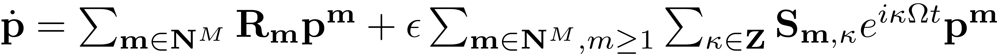
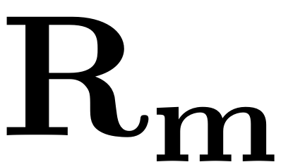
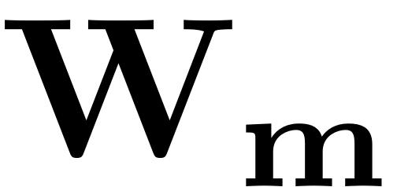
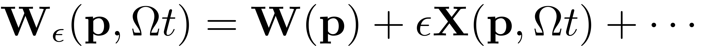
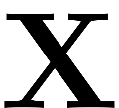

Continuation of the ROM
Contents
SSMTool integrates the Continuation Core (COCO) Toolbox, to analyse the reduced dynamical system on the SSM. This allows for the detection and continuation of families of periodic orbits, equilibrium points and bifurcations of different types. As the reduced dynamics constitute a low-dimensional dynamical system, COCO is the perfect tool for such an analysis. It is very versatile and for small dynamical systems such as the reduced dynamics it operates fast. The combination of model reduction to the invariant SSMs and COCO for the in depth analyisis of the ROM on the manifold thus results in a highly efficient and accurate routine for model reduction. The ROMs are exact due to the invariance of the SSM and their analysis with COCO is fast due to their low dimensionality.
Detailed information and documentation can be found in the online knowledgebase for COCO.
For the analysis and continuation of two-dimensional invariant tori, the continuation toolbox TOR is used. This toolbox is based on COCO and thus naturally integrates into the syntax used for the routines implemented for coupling SSMTool with COCO.
A general Wrapper couples COCO to the dynamical system class, for the analysis of the full dynamical systems and the comparison of full system results to the ones obtained directly from the ROM.
For using these routines for the continuation of the reduced dynamics, several Wrappers in the SSM class serve for the intuitive and straightforward handling of the continuation problems which are constructed on the SSM. Generally these wrapper-functions follow the syntax and naming conventions of COCO. On the syntax of the continuation toolbox The basic setup for the continuation of the ROM given by the reduced dynamics on an SSM looks as follows. The  -dimensional ODE provided by the reduced dynamics are written in terms of the expansion computed by SSMTool:
-dimensional ODE provided by the reduced dynamics are written in terms of the expansion computed by SSMTool:

The autonomous coefficients of the reduced dynamics  and of the SSM expansion  do not change if the forcing frequency or amplitude are changed. Therefore the autonomous SSM (we call the object representing the manifold S ) can be precomputed up to a desired order as
[W,R] = S.compute_whisker(order);
Consequently the ODE for the ROM is encoded as
fdata = struct('order', order,'R',R,'W',W); odefun = @(t,x,p) ode_2DSSM_cartesian(t,x,p,fdata,S);
To speed up the process of finding nearby solutions, it is recommended to provide the Jacobians of the ROM, both with respect to the parametrisation coordinates, as well as with respect to external parameters. These are then used to get an approximate initial guess for nearby solutions of the continuation problems.
odefun_dx = @(t,x,p) ode_2DSSM_cartesian_DFDX(t,x,p,fdata,S); odefun_dp = @(t,x,p) ode_2DSSM_cartesian_DFDP(t,x,p,fdata,S);
Next we build the continuation problem structure prob. It contains all information about the dynamical system and the parameters used for continuation. As the ROM which is analysed is non-autonomous and our implementation of it is not vectorized, we set the corresponding parameters to false.
Build continuation problem
prob = coco_prob(); prob = cocoSet(obj.contOptions, prob); %set default options prob = cocoSet(prob, 'ode', 'autonomous', false); prob = cocoSet(prob, 'ode', 'vectorized', false);
Consequently we provide the continuation variables to the structure. This includes the ODE and its jacobians, initial conditions and the initial parameter values.
coll_args = {odefun,odefun_dx,odefun_dp, t0, z0, {'om','eps'}, p0};
Then we look for an initial solution guess. In this case, we wish to obtain and continue periodic orbits of the dynamical systems. So we have to compute an initial periodic orbit, from which a family of periodic orbits is later computed via continuation.
prob = ode_isol2po(prob, '', coll_args{:});
The structure can be customized by adding functions, which are evaluated during continuation. This can be employed to map the parametrisation coordinates onto full physical coordinates online. For each forcing frequency the SSM parametrisation is computed

The coefficients of the Fourier expansion of  and  are dependent on the forcing frequency via the non-autonomous invariance equation. Therefore they have to be recomputed if the forcing frequency is changed. We add a function to the continuation problem to map the solution points in parametrisation space onto physical coordinates, using
are dependent on the forcing frequency via the non-autonomous invariance equation. Therefore they have to be recomputed if the forcing frequency is changed. We add a function to the continuation problem to map the solution points in parametrisation space onto physical coordinates, using  . As cannot be precomputed, it is internally attached to the problem structure - and then evaluated in the full_amplitude function.
. As cannot be precomputed, it is internally attached to the problem structure - and then evaluated in the full_amplitude function.
% Convert reduced results to full while contination to avoid overhead of SSM % computations ampData = struct('W',W,'nt',nt,'outdof',outdof); numoutdof = numel(outdof); % Specify DOFs of output ampNames = cell(1, numoutdof+1); ampNames{end} = 'Znorm'; for k = 1:numoutdof ampNames{k} = strcat('amp',num2str(outdof(k))); end ampfunc = @(prob,data,u) full_amplitude(prob,data,u,obj); prob = coco_add_func(prob, 'amp', ampfunc, ampData, 'regular', ampNames,... 'uidx', uidx([maps.x0_idx, maps.p_idx]));
To initiate the continuation, we set the continuation variables, and a parameter-range over which they continuation is to be performed. In this case we choose to continue the forcing frequency. The output bifurcation data bd contains the family of periodic orbits, starting at the initially computed orbit and continuing along a family as the forcing frequency is varied.
Start continuation
cont_args = {[{'om'},{'po.period'},ampNames(:)'],parRange};
% Release parameters for continuation
bd = coco(prob, 'my_continuation_run', [], cont_args{:});
As explained in the tutorial on computing SSMs, in many cases only a leading order approximation to the invariant manifold has to be computed. In this case the coefficients of and $\mathbf{X}$do not exhibit dependence on the forcing frequency. The ROM can thus be precomputed and after the continuation run has finished, the obtained solutions are mapped back to physical coordinates via the leading order approximation of the SSM parametrisation.
This basic syntax can be supplemented with various options to customize the continuation routine. Examples of this can be found in the following Wrapper methods:
If a bifurcation point, periodic orbit, invariant torus, branch point or similar is found in a continuation run, it can then be used as a starting point for a new continuation run to detect families of such special features. For the handling of these cases a list of Wrappers are provided: